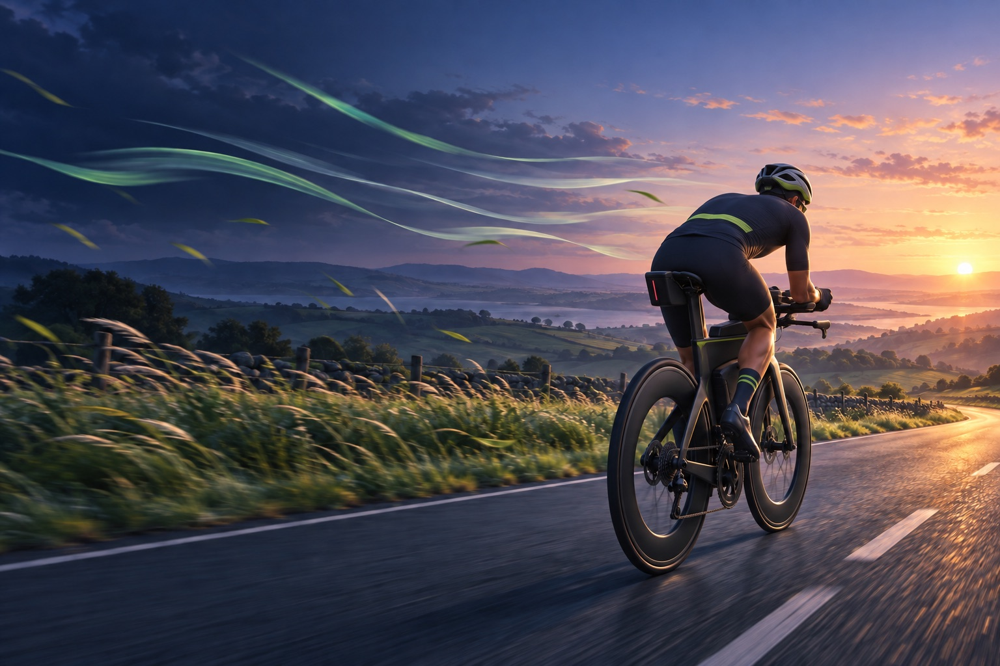

YOUR PERSONAL RIDE ADVISOR

Make the weather
work for you.
Choose a ride window, then rank your familiar routes or explore wind-aware routes from where you are.
Scan to openTOMORROW'S FORECAST
Plan your window
DEMO DATA Hourly conditions
The highlighted hour matches your planned departure. Wind speeds are sustained; gusts are shown separately.
RECOMMENDATIONS
Your best routes for tomorrow
SSW 11 mph at 8 AM
Riding conditions need attention:
WHY THIS ROUTE?
Wind-aware ranking,
made clear.
This demo ranks routes by distance, climbing, and the direction of the outbound leg against the selected wind. Segment-by-segment scoring will follow when live forecasts and full route geometry are connected.
SETTINGS
Your ride data
Import activity archive
On Mac, choose the unzipped Strava export folder. On iPhone, choose the original ZIP from Files or iCloud Drive. A simplified GPS line stays only on this device for route previews.
Ridewise sample routes
Use the publicly shared Ridewise route dataset instead of importing your own activities. It loads quickly and stays on this device.
Strava
Not connected
Connect your Strava account to import cycling activities, discover familiar routes, and replace the demo data. You will sign in directly with Strava—Ridewise™ never sees your password.
Garmin Connect
Not connected
Connect Garmin Connect to send Ridewise™ courses to your compatible Garmin device once real route geometry is available.